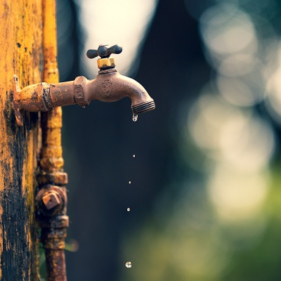
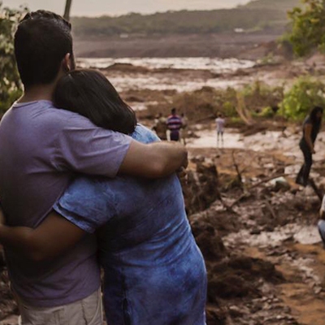

Porque sua ajuda é importante? |
 |
Nós do Mundo Azul acreditamos que todos temos potencial para ajudar em apoio a causa, e com sua ajuda, podemos auxiliar as vitimas e evitar desastres relacionados à má administração da agua, ocasionando a sua poluição e acidentes. |
|  | Como posso ajudar? |
Você pode nos ajudar doando a quantia lhe for melhor, recomendamos entre 5 a 50 reias. |